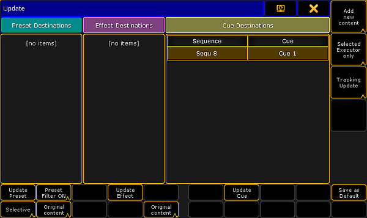

The stored values in a cue can always be changed by storing new values into them.
But if there are active cues and active values in the programmer, then it is also possible to update the cue.
When this scenario is valid then the Update key will light up. Pressing the key will open the Update Menu.
Update Menu
The update menu could look like this:

Update Menu
There are three sections of this menu and there are buttons that allow to change some options and perform some actions.
The three section are Preset, Effect, and Cue.
Each section handles each type of data. If there is something that can be updated then it will be listed in each section.
The following is an explanation of the different options.
Original content only or Add new content (all sections):
You can choose if it is only possible to update the existing values at their original location - possibly a previous cue - or if the values including possible new values should be updated at the currently active location.
Update Preset, Update Effect, and Update Cue:
Tapping this button will update the location with the values.
Preset Filter (Preset section only):
Here the Preset Filter can be turned On or Off. When this is On then it is only possible to update values of the corresponding Preset Type in the presets.
Selective, Global, Universal, or Preset Type Default (Preset section only):
This allows you to choose to add the new updated values as a different type of data.
Executor filter (Cue section only):
This button toggle through four different options. They define what executors are visible in the list of sequences. The four options are:
Selected Executor only:
This will only display the first or primary selected executor.
Executors Called By Me:
This will display the executors that last was triggered by the active user.
Last called Executor only:
This will only display the sequence that was triggered last.
All possible Executors:
This will display all the sequences with active cues.
Save as Default:
This button will store the current options as the new default for the current User Profile. This is the only location where you can see and change these defaults.
If you have the Update menu visible on screen 1 then you might be able to use the X-keys and the U1 , U2, and U3 to selected the different options and buttons.
Please read details about Presets and Effects in the Preset section and the Effect section. These include explanations of the different relevant options.
For updating a cue, tap the sequence you want to update or if you have selected the sequence using the screen encoder you can tap the Update Cue button or the screen encoder.
Updating or editing in the Sheets
It is also possible to change the values directly in the Sequence Tracking Sheet and the Sequence Content Sheet. These two sheets and the editing process are described in the Looking at the Cue Content topic.